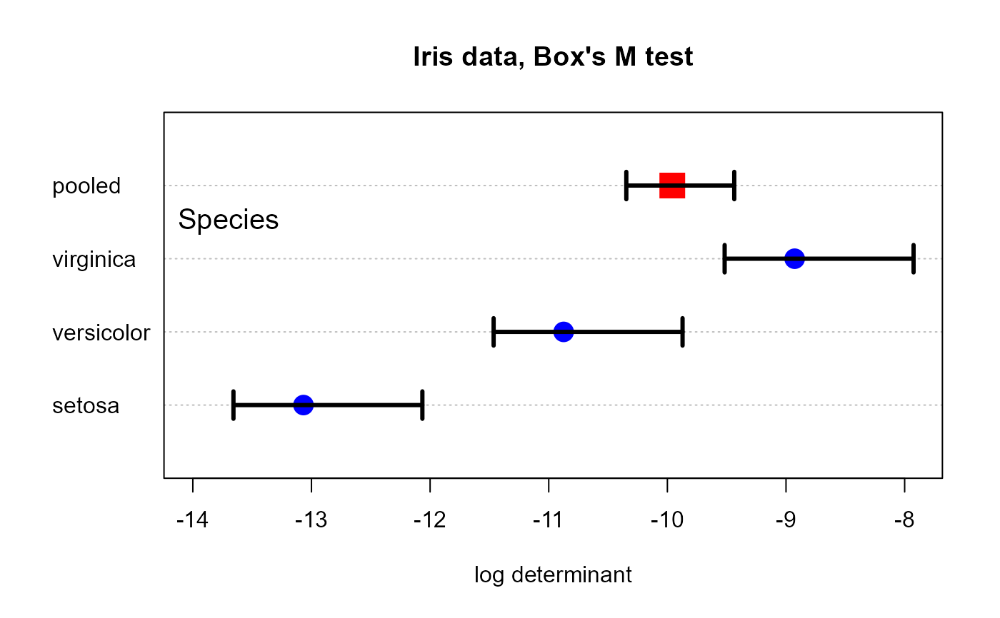
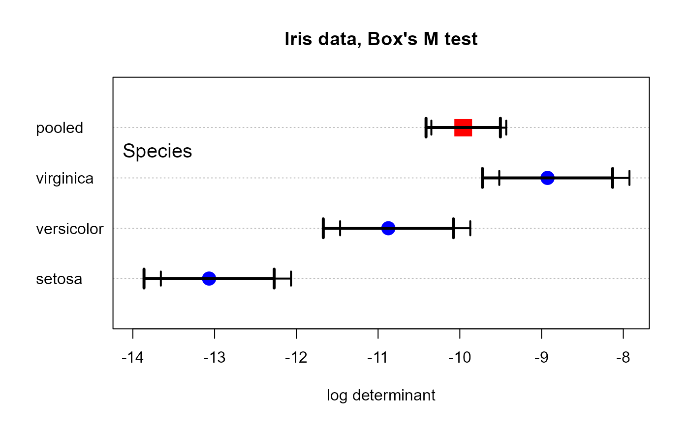

logdetCI.RdThis function uses asymptotic results described by Cai et. al (2016), Theorem 1, to calculate approximate, normal theory confidence intervals (CIs) for the log determinant of one or more sample covariance matrices.
Their results are translated into a CI via the approximation $$ \log det( \widehat{\Sigma} ) - bias \pm z_{1 - \alpha/2} \times SE $$ where \( \widehat{\Sigma}\) is the sample estimate of a population covariance matrix, \(bias\) is a bias correction constant and \(SE\) is a width factor for the confidence interval. Both \(bias\) and \(SE\) are functions ofS the sample size, \(n\) and number of variables, \(p\).
This function is included here only to provide an approximation to
graphical accuracy for use with Box's M test for equality of covariance
matrices, boxM and its associated plot.boxM method.
logdetCI(cov, n, conf = 0.95, method = 1, bias.adj = TRUE)a covariance matrix or a (named) list of covariance matrices, all the same size
sample size, or vector of sample sizes, one for each covariance matrix
confidence level
Three methods are provided, based on Cai et. al Theorem 1 (method=1), Corollary 1 (method=2) and
Corollary 2 (method=3),
each with different bias and SE values.
logical; set FALSE to exclude the bias correction term.
Cai et. al (2015) claim that their Theorem 1 holds with either \(p\) fixed or \(p(n)\) growing with \(n\), as long as
\(p(n) \le n\). Their Corollary 1 (method=2) is the special case when \(p\) is fixed.
Their Corollary 2 (method=3) is the special case when \(0 \le p/n < 1\) is fixed.
The properties of this CI estimator are unknown in small to moderate sample sizes, but it seems to be the only one available. It is therefore experimental in this version of the package and is subject to change in the future.
The \(bias\) term offsets the confidence interval from the sample estimate of \( \log det( \widehat{\Sigma} ) \). When \(p\) is large relative to \(n\), the confidence interval may not overlap the sample estimate.
Strictly speaking, this estimator applies to the MLE of the covariance matrix \( \widehat{\Sigma}\), i.e., using \(n\) rather than \(n-1\) in as the divisor. The factor \((n-1 / n)\) has not yet been taken into account here.
A data frame with one row for each covariance matrix.
lower and upper are the boundaries of the confidence intervals.
Other columns are logdet, bias, se.
Cai, T. T.; Liang, T. & Zhou, H. H. (2015) Law of log determinant of sample covariance matrix and optimal estimation of differential entropy for high-dimensional Gaussian distributions. Journal of Multivariate Analysis, 137, 161-172. doi: 10.1016/j.jmva.2015.02.003
data(iris)
iris.mod <- lm(as.matrix(iris[,1:4]) ~ iris$Species)
iris.boxm <- boxM(iris.mod)
cov <- c(iris.boxm$cov, list(pooled=iris.boxm$pooled))
n <- c(rep(50, 3), 150)
CI <- logdetCI( cov, n=n, conf=.95, method=1)
CI
#> logdet bias se lower upper
#> setosa -13.067360 -0.20598584 0.4062465 -13.657603 -12.065146
#> versicolor -10.874325 -0.20598584 0.4062465 -11.464568 -9.872111
#> virginica -8.927058 -0.20598584 0.4062465 -9.517301 -7.924844
#> pooled -9.958539 -0.06731274 0.2321101 -10.346154 -9.436299
plot(iris.boxm, xlim=c(-14, -8), main="Iris data, Box's M test", gplabel="Species")
arrows(CI$lower, 1:4, CI$upper, 1:4, lwd=3, angle=90, len=.1, code=3)

CI <- logdetCI( cov, n=n, conf=.95, method=1, bias.adj=FALSE)
CI
#> logdet bias se lower upper
#> setosa -13.067360 0 0.4062465 -13.863589 -12.271132
#> versicolor -10.874325 0 0.4062465 -11.670553 -10.078097
#> virginica -8.927058 0 0.4062465 -9.723287 -8.130830
#> pooled -9.958539 0 0.2321101 -10.413466 -9.503611
plot(iris.boxm, xlim=c(-14, -8), main="Iris data, Box's M test", gplabel="Species")
arrows(CI$lower, 1:4, CI$upper, 1:4, lwd=3, angle=90, len=.1, code=3)
